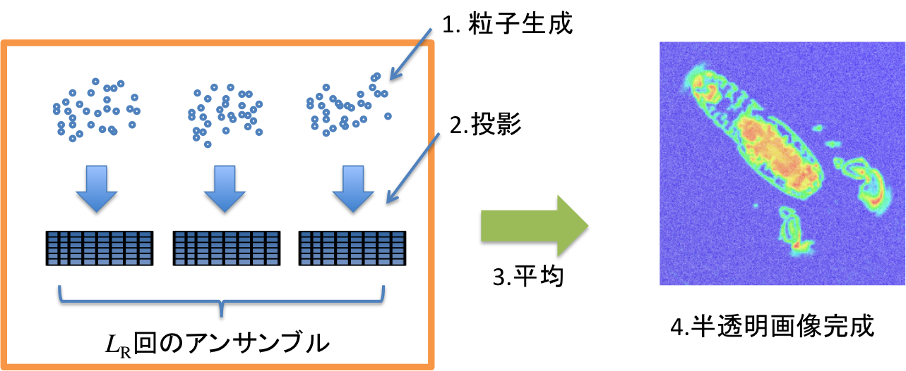
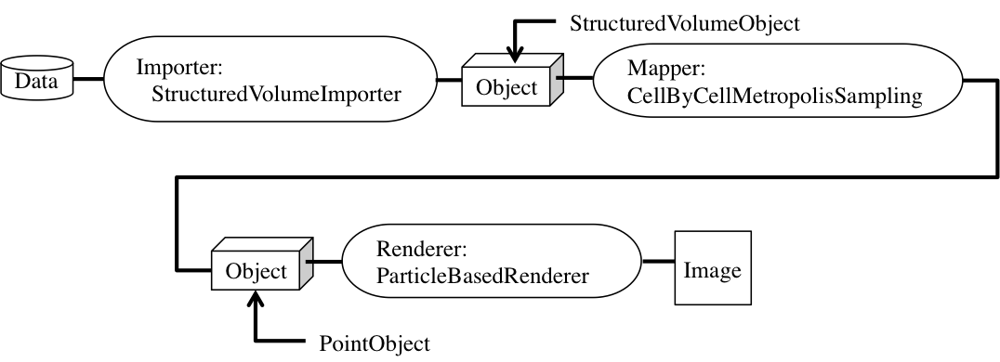
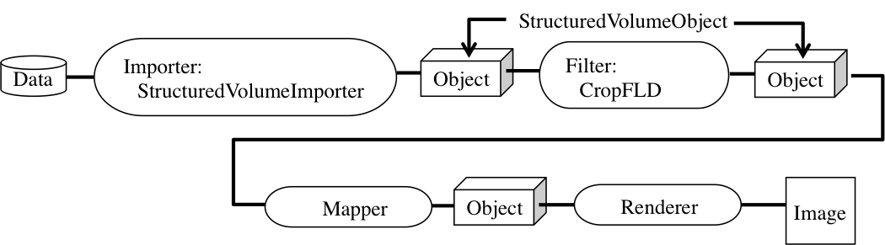

例 粒子ベース・ボリュームレンダリングの実装
粒子ベース・ボリュームレンダリング（Particle-Based Volume Rendering; PBVR）は「不透明発光粒子モデル」に基づくボリューム・レンダリング手法です．
ソート処理の必要がないため，サイズの大きなボリュームデータの可視化に有利です．
粒子ベース・ボリュームレンダリングは伝達関数で定まる不透明度分布と一致するサンプリング点分布を確率的に生成し，ピクセルごとの隠点処理と輝度値アンサンブル平均によって半透明画像の生成を実現します．
粒子ベース・ボリュームレンダリングの実現手順は下図に示すとおり，
- ＊ 粒子を生成・投影し，
- ＊ 画像のアンサンブル平均（平均回数を以降リピートレベルと呼びます）を行って
- ＊ 半透明画像を生成します．
（ 詳細は参考文献：
Koji Koyamada, Naohisa Sakamoto and Satoshi Tanaka,
"A Particle Modeling for Rendering Irregular Volumes,"
Proceedings of the International Conference on Computer Modeling and Simulation
(UKSIM 2008),
Cambridge, England, April 1 3, 2008, pp.372-377, 2008.
を参考にして下さい ）

粒子ベース・ボリュームレンダリング手順
粒子ベース・ボリュームレンダリングを実現するための可視化パイプラインには
- Importer：StructuredVolumeImporte
- Mapper：CellByCellMetropolisSampling --> PointObjectへ変換
- Renderer：ParticleBasedRenderer
を使用します．

可視化パイプライン
1. 作業ディレクトリの作成
作業ディレクトリに「PBVR」というディレクトリを作成して，移動して下さい．
$ mkdir PBVR
$ cd PBVR
2. main.ccp の作成
「main.cpp」というファイルを作成して下さい．
プログラム実行の際にコマンドライン引数としてファイルを読み込むようにするため，引数のチェックをします．
また，このプログラムでは伝達関数を引数として受け取る場合も想定して作成しています．
int main( int argc, char** argv )
{
if( !(argc == 2 || argc == 3) ) {
std::cerr << "USAGE (1): PBVR volume_data" ;
std::cerr << std::endl;
// 伝達関数を読み込む場合
std::cerr << "USAGE (2): PBVR volume_data transfer_fnction.kvsml" ;
std::cerr << std::endl;
exit(1) ;
}
return ( 0 );
}
3. 構造型ボリュームデータのImport
コマンドライン引数として与えられたファイル名をインポート（kvs::StructuredVolumeImporter）して構造型ボリュームデータ（kvs::StructuredVolumeObject）へ変換します．
また，エラーメッセージを簡単に表示するために，kvs::Message クラスを用いて，標準出力を行っています．
kvs::StructuredVolumeObject* volume =
new kvs::StructuredVolumeImporter( std::string( argv[1] ));
if ( !volume ) {
kvsMessageError( "Cannot create a structured volume object." );
return( false );
}
4. 伝達関数の設定
伝達関数（kvs::TransferFunction）を作成します．
伝達関数は，ボリュームデータから粒子を生成するために必要な関数です．
コマンドライン引数としてデータを受け取っていない場合には標準の伝達関数を用います．
kvs::TransferFunction* transfer_function = 0 ;
if ( argc == 2 ) {
// rainbow color (default)
transfer_function = new kvs::TransferFunction ();
} else
if ( argc == 3 ) {
// コマンドライン引数で伝達関数を受け取った場合
transfer_function = new kvs::TransferFunction ( argv[2] );
}
5. Mapperの作成 --サンプリング--
Mapperとしてkvs::CellByCellMetropolisSamplingを用いてサンプリングを行い，
構造型ボリュームデータ（kvs::StructuredVolumeObject）から点群データ（kvs::PointObject）へ変換します．
点群生成のためのkvs::CellByCellMetropolisSamplingクラスのコンストラクタの引数は，
- 構造型ボリュームデータ（kvs::StructuredVolumeObject）
- サブピクセルレベル（size_t型，ここではリピートレベルの平方根）
- サンプリングステップ（float型）
- 伝達関数（kvs::TransferFunction）
です．
// リピートレベルとサブピクセルレベル
int repeat_level = 9 ;
int subpixel_level = (int) sqrt ( (double)repeat_level );
// サンプリングステップ
const float sampling_step = 0.5f;
// サンプリング
kvs::PointObject* object =
new kvs::CellByCellMetropolisSampling(
volume, // ボリュームデータ
subpixel_level, // サブピクセルレベル
sampling_step, // サンプリングステップ
*transfer_function ); // 伝達関数
サンプリングによって生成された粒子数はkvs::PointObjectクラスのもつメソッドnumberOfVertices()で確認することができます．
設定したリピートレベルと伝達関数に応じて生成される粒子数が決定されます．
int num_particles = object->numberOfVertices() ;
std::cout << "** Number of Particles: " << num_particles << std::endl;
6. Rendererの作成
Renderer を作成します．
ここでは，Renderer にkvs::glsl::ParticleBasedRendererを選択しています．
また，アンサンブル平均をおこなうため，リピートレベルをRendererに登録します．
ここでは，リピートレベルを設定するメソッドは：setRepetitionLevel ( repeat_level ) です．
kvs::glsl::ParticleBasedRenderer* renderer =
new kvs::glsl::ParticleBasedRenderer(); // Renderer の作成
renderer->setRepetitionLevel ( repeat_level ); // リピートレベルを登録
7. 描画
可視化処理を行います．
kvs::Applicationとkvs::Screenにより，ウィンドウの初期化や記イベントの登録を行い，
Screenクラスのメソッド registerObjectへObjectとRenderer を登録します．
kvs::Application app( argc, argv );
// Screenクラスの生成と設定
kvs::Screen screen( &app );
screen.setGeometry( 0, 0, 512, 512 );
// ObjectとRendererの登録
screen.registerObject( object, renderer );
screen.setTitle( "Particle Volume Renderer" ) ;
screen.show();
return( app.run() );
8. ヘッダファイル
使用したKVSクラスをインクルードします．ここでは，
- kvs::StructuredVolumeImporter
- kvs::StructuredVolumeObject
- kvs::Message
- kvs::TransferFunction
- kvs::CellByCellMetropolisSampling
- kvs::PointObject
- kvs::glsl::ParticleBasedRenderer
と描画のためのクラス
- kvs::Application
- kvs::Screen
を使いました．
#include <kvs/TransferFunction>
#include <kvs/CellByCellMetropolisSampling>
#include <kvs/PointObject>
#include <kvs/ParticleBasedRenderer>
#include <kvs/Application>
#include <kvs/Screen>
9. まとめ
以上をまとめたプログラムはこちら： PBVR.tgz
※ このフォルダ内にはテスト用ボリュームデータ
- ＊ lobster.fld
が入っています．
10. コンパイルと実行
作成したプログラムをコンパイル，実行してみましょう．
KVSプログラムをコンパイルするためにはkvsmakeコマンドを用いてMakefileを作成すると簡単にコンパイルを行うことができます．
$ kvsmake -G <-- Makefile の作成
$ kvsmake <-- コンパイル
エラーなくコンパイルできたら，実行してみましょう．
実行すると，以下のような結果が得られます．
$ ./PBVR lobster.fld
粒子ベース・ボリュームレンダリングによる可視化結果
生成粒子数：約700万点，リピートレベル：9
問題 可視化パイプラインを使ってプログラムを作ろう
以下のサンプルプログラムは登録された構造型ボリュームデータの一部を切り出す Filter を 実装したプログラム
「CropFLD (CropFLD.h, CropFLD.cpp)」である．
このプログラムを用いてボリュームデータの一部を切り出して可視化するプログラムを作成してみよう．
可視化パイプラインは：

のようになり，Filter処理（CropFLD）をおこなった後のObjectはkvs::StructuredVolumeObject のままですので，その後のMapperやPendererは他の例を参考にして作成することができます．
Importしたボリュームデータ（volume）と，切り出したいグリッドの範囲を入力すると，その部分のボリュームデータを返します．
// ボリュームデータの入力
kvs::StructuredVolumeObject *volume =
new kvs::StructuredVolumeImporter( std::string( argv[1] ) );
// 切り出したいデータの範囲を指定
kvs::Vector3ui grid_min（ 0, 0, 0 ）,
kvs::Vector3ui grid_max( 10, 10, 10 );
// Croppingの実行
kvs::StructuredVolumeObject *volume2 =
new CropFLD( volume, grid_min, grid_max );
ヘッダに
#include "CropFLD.h"
を記入します．
Modefied at June 16, 2013
at April 27, 2017
at May 28, 2021